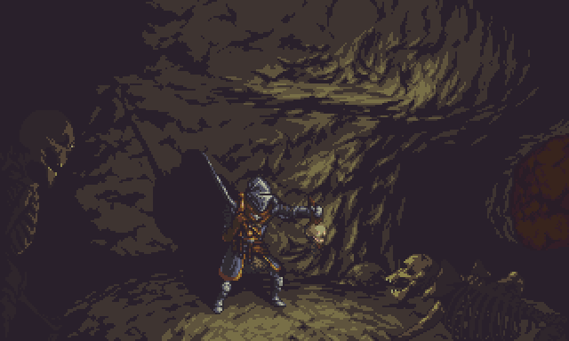

Apaixonado por transformar ideias em soluções digitais completas, desenvolvendo aplicações que unem desempenho, escalabilidade e uma experiência intuitiva. Comprometido com código limpo, boas práticas e aprendizado contínuo.

Me chamo Nicolas Linares de Olivera, sou graduado em Análise e Desenvolvimento de Sistemas e pós-graduado em Desenvolvimento Full-Stack. Minha formação me proporcionou uma visão abrangente do desenvolvimento de software, permitindo atuar tanto no desenvolvimento de interfaces quanto na construção da lógica de negócio e integração entre sistemas.
Tenho interesse em desenvolver aplicações modernas, escaláveis e de alta qualidade, sempre buscando unir boas práticas de engenharia de software, código limpo e foco na experiência do usuário. Acredito que a tecnologia deve transformar problemas em soluções eficientes, criando produtos que entreguem valor real e sejam preparados para evoluir conforme as necessidades do negócio.
Tecnologias e ferrametas usadas por mim.
Alguns dos meus projetos públicos.